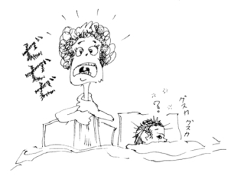

Prescription 処方箋 しょほうせん
How many tablets and how often a day, should I take this medicine?
この薬は、何錠ずつ、一日に何回、飲めばいいですか。
このくすり は、なんじょうずつ、いちにちになんかい、のめばいいですか。
You take three tablets, three times a day or three tablets every eight hours.
３錠ずつ、一日３回、あるいは、８時間おきに飲みます。
さんじょうずつ、いちにちさんかい、あるいは、８じかんおきにのみます。
Does it matter if I take this medicine before or after eating?
食前と食後、どちらでもかまいませんか。
しょくぜんとしょくご、どちらでもかまいませんか。
Should I take this medicine with food?
食べ物と一緒に飲んだ方がいいですか。
たべものといっしょに のんだほうが いいですか。
Either way is fine.
どちらでも構いません。
どちらでも かまいません。
It should be taken before meals.
食前に服用しなければなりません。
しょくぜんに ふくようしなければなりません。
What are the side effects?
副作用として気をつけることはありますか。
ふくさようとして きをつけることはありますか。
You should avoid driving, because this medicine will make you sleepy.
眠くなりますので、車の運転は避けてください。
ねむくなります ので、くるまのうんてんはさけてください。
I have been taking medication for high blood pressure. Is it OK to take cough medicine, too?
高血圧の薬を服用しておりますが、咳止めの薬と一緒に飲んでも大丈夫でしょうか。
こうけつあつのくすりを ふくようしておりますが、せきどめのくすりといっしょに のんでも だいじょうぶでしょうか。
In that case, you'd better ask your doctor.
その場合は、あなたの医師にお尋ねになった方がよろしいですよ。
そのばあいは、あなたのいしに おたずねになったほうがよろしいですよ。

A conversation between a patient and a doctor about prescription
Patient:
The other day, I had sore throat and visited a local doctor for the first time. After examination, the doctor explained how to take medications and gave me a prescription. But, I had difficulty understanding it.
先日、喉が痛くて、初めて当地のお医者さんのところへ行きました。診察が終わってから、薬の服用方法について医師から説明があり、処方箋 (prescription)を貰いました。しかし、よく理解できませんでした。
せんじつ、のどがいたくて、はじめて とうちの おいしゃさんのところへ いきました。 しんさつがおわってから、くすりのふくようほうほうについて いしからせつめいがあり、しょほうせん(prescription)をもらいました。しかし、よくりかいできませんでした。
Doctor:
Doctor’s explanations certainly tend to be too technical. At the pharmacy, how to take medications are printed on the label affixed to the bottle or tube. Ask the pharmacist any questions you have. The major difference between the U. S. and Japan in regard to the way you buy medications is that the separation of dispensary from medical practice is complete in the U.S. In other words, you go to a private doctor who gives you a prescription, then, you go to a pharmacy in a different location and buy medications. Large hospitals do have their pharmacies, but you can buy your medication at either hospital pharmacy or any pharmacy you choose as long as you have the prescription.
医師の説明は、何と言っても専門的になりがちですね！ 薬局では、薬のビンやチューブの外側のラベルに用法などをタイプしてくれます。しかし、不明の点は、納得できるまで質問してください。アメリカと日本での医療品の購入の仕方で、もっとも大きな違いは、アメリカでは医薬分業が徹底している点でしょう。つまり、個人のお医者さんに行って処方箋を貰うと、医院とは別の所にある薬局に行って薬を購入します。大きな病院には薬局が付属しています。そこで指示された薬を購入することもできますが、病院外の薬局でも処方箋を示して購入することができます。
いしのせつめいは、なんといっても せんもんてきになりがちですね！ やっきょくでは、くすりのビンやチューブの そとがわのラベルに ようほうなどを タイプしてくれます。しかし、ふめいのてんは、なっとくできるまで しつもんしてください。アメリカとにほんでの いりょうひんのこうにゅうのしかたで、もっともおおきなちがいは、アメリカでは いやくぶんぎょうが てっていしているてんでしょう。つまり、こじんのおいしゃさんにいって しょほうせんをもらうと、いいんとはべつのところにある やっきょくにいって くすりをこうにゅうします。おおきなびょういんには やっきょくが ふぞくしています。そこで しじされたくすりを こうにゅうすることもできますが、びょういんがいの やっきょくでも しょほうせんをしめして こうにゅうすることができます。
My two cents 一言おせっかい
You can buy some household medicine such as fever medicine and simple cold medicine without prescriptions. Those medications are called “over-the-counter (OTC) medicine.”
解熱剤や、ちょっとした風邪薬などの家庭常備薬は、医師の処方箋なしで薬局で買えます。 そのような薬は、オーバー・ザ・カウンターと云う表現をします。
げねつざいや、ちょっとした かぜぐすりなどの かていじょうびやくは、いしのしょほうせんなしで やっきょくでかえます。そのようなくすりは、オーバー・ザ・カウンターというひょうげんをします。
What kind of cough medicine (medicine for fever) can I buy over the counter?
どの咳薬（解熱剤）を処方箋なしで買えますか。
どのせきぐすり（げねつざい）を しょほうせんなしでかえますか。
[shi01]
| © 1995-2013 NACOS International Institute. All Rights Reserved. |